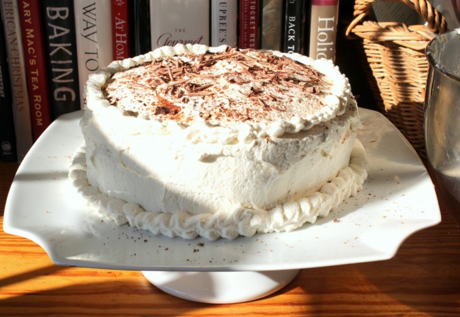
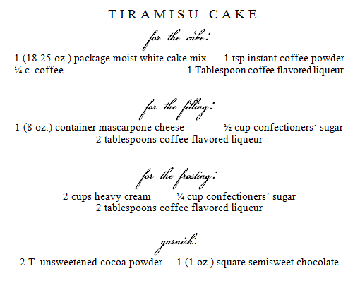

.png)
.PNG)
.PNG)
.PNG)
.PNG)
.PNG)
.JPG)
.JPG)
.PNG)
.PNG)



Yesterday marked the one year anniversary of the birth of Talk of the House; so happy birthday, blog! And this is my 149th post. Looks like I could have gotten in one more post along the way to make it a nice even 150, doesn’t it?? Oh well, maybe next year’s will land on a more impressive number. I think for a newbie, it has done pretty well this year…149 posts, right at 1,000 subscribers, a couple of awards, and 2,496 comments! 🙂 When I ventured into this a year ago, I never would have dreamed I would have these numbers today. So thank you thank you thank you!!!
The cake I have on today’s post is one my mom makes for my birthday. I made it a few weeks ago(for no reason other than the fact that I like it!) but I have not had a chance to share it with you. So I thought it would be appropriate to share today for the blog’s birthday. It’s a Tiramisu cake, and it is about as time consuming as Jan Karon’s Orange Marmalade. I am usually a “cake mix snob,” but I make the exception for this cake. It is great, and it really does taste like tiramisu.
 Also in honor of the one year anniversary, I thought I would make a post of the top 10 questions I get asked in emails around here. I seem to answer a good many of the same ones from time to time. I will start with the 10th most asked and work my up to number one. Here goes….
Also in honor of the one year anniversary, I thought I would make a post of the top 10 questions I get asked in emails around here. I seem to answer a good many of the same ones from time to time. I will start with the 10th most asked and work my up to number one. Here goes….
10. With all your travel posts, do you work for a travel agency?
No, I am an educator. We just love to travel to different places and stay in inns. There are so many nice ones out there, and I love the attention to architectural and interior details that inns normally have.

9. What do you teach?
I currently teach third grade, but I have taught kindergarten, first, and second grade. For several summers, I also taught a short program in creative writing and calligraphy to gifted students.
8. What kind of camera do you use for the photographs on your blog?
I use a Canon Rebel EOS T3i. Up until last April, I had never used a SLR camera. I took an online course one weekend from Shootflyshoot a week before launching the blog and learned quite a bit from it. I still have a very long way to go, but at least I learned what the function of some of the settings are on my camera. I learned to take it off of the “auto”mode. I don’t use the flash, and when shooting interior pictures, I leave all the lights off. (Yes, you read that right.) Oh, and I try to always use a tripod if possible.

7. Where did you get the curtains in your home?
I made the ones in the kitchen and dining room, the master bedroom, our daughter’s bedroom, and the great room (the 18 ft. long ones.)

I purchased the ones in the playroom and the boys’ bedroom. I ordered them from Country Curtains, and when they came in, I lined all of them with twin size white sheets. I also added ribbon trim down the sides of the ones in the playroom.

6. How do you do your lettering? Can you teach us?
This question (and answer) deserves an entire post. I hope to do a how-to post on it this summer, so please look for it then. I will say that I think lettering is a lot like drawing. If you can find something you like and look at it, then draw it slowly, you should be able to imitate many lettering styles. I will give more specifics this summer…meanwhile, look for fonts online that you like. Practice copying them. (That’s your homework assignment until then. 🙂 )
5. What is the name of the paint used on your rooms in your house?
At one point, almost all of the rooms were painted Twine from the old Martha Stewart line of paints carried at K-Mart. Then I needed to repaint some spaces, and those paints were no longer available. So I had it color matched at Benjamin Moore. It is an almost perfect match with BM’s Brandon Beige.

4. What is the name of the paint used on the exterior of your house?
It is called Pelham Gray, and it is made by Martin Senour.
3. Can you share the name of the house plan your home was built from?
We started with the Southern Living plan, Lakeside Cottage. but we made many changes in the layout – relocating a large number of spaces. The outside stayed pretty true to the plan though.

2. Where did you get the frames that are used with all the black and white photographs in your home?
I purchased all of them from Michaels, but our local stores do not seem to carry them anymore. They are made of plastic with snap in glass on the front, and they are available online at Amazon.
and now question number one….

1. How do you keep up with the blog, a full time job, a home, and family?
Do you see that desk there, and do you see how clean it is? That is not the normal scene around here. I can’t even remember the last time it has looked like that. It is buried right now under a pile of papers with ideas for posts, papers to grade, and receipts. So to answer the question, I don’t. I don’t keep up. There is no way to do a good job at keeping up with everything. My normal bed time is 1:00 a.m., and I get up at 6:30. My husband helps a lot with laundry and cooking. I do the house cleaning alone, so that is why I needed to do spring cleaning so badly last week. Before I started the blog, teaching was a VERY full time job – and still is. I stay most every day until 5:30, and I bring work home on the weekends, too. So I say all of this to say, pretty pictures are not a full reality. For every pretty photo on here, there is an equally messy pile behind me…papers on the tables, laundry needing folding in the chair, etc. Keep that thought in mind whenever you look in magazines or on blogs. If something looks perfect, you can bet there are assistants running around helping to make it look that way…truly.
Okay, that is my sermon for this one year anniversary of Talk of the House. Sorry I went all preachy on you today.:) I just know how easy it is to get discouraged when you compare yourself to others. Don’t. do. it.
End of sermon. Now it is your turn to talk. No, I don’t want more questions to answer. I would love it if you would tell a little about yourself in the comments today…What state do you live in? Do you work? What’s on your bucket list? Anything. It has been fun getting to know you this first year of blogging, and I am looking forward to doing more of it next year. I hope you will stick around. 🙂
I’d love to hear from you!


.PNG)
I live in Southwestern Missouri, so we do alot of southern cooking.I don’t fix fried chicken very much now as kids are grown up and have families of their own now. But have fixed quite a few pots of chicken & noodles over the years. I love Buffalo checked fabric. Love the post on James Farmer & would love to win his book. Love your post & your lovely home,chalkboards, decorating actually everything you write & show in pictures is such an inspiration, can’t wait to receive the next post.
Hi Kelly, and happy blogiversary!
I live in PA but spent 5 years in NC, where I fell in love with southern living. A great front porch with a swing in the south is bliss, I say! We also came to love those NC favorites like pulled pork (vinegary in that neck of the woods) and Brunswick stew!
I found you via Rhoda at SoutherHospitality, and you are now one of my must-read blogs. I have wood trim and doors in the house I moved into, and you inspire me to make it work. I prefer your trim though 😉 And now I want to plank most of the walls in my house!
Congratulations on your blog milestone! For someone who has only been blogging a year, you have created an amazing place for us to come visit! I always look forward to a new notification, and I’m never disappointed. When I first found you through Rhoda at Southern Hospitality, I was hooked from the get-go. I went back and read everything you had already written. I was also excited to find out that we live pretty close to each other, and I’m very familiar with many of the the places and things you blog about. I especially love your travel posts! And your decorating posts! And your book posts! And your recipe posts! LOL Yep–love it ALL! You are a very talented writer and decorator, and you ‘inspire’ your readers to ‘aspire’ to find and create beauty in the home. You are also very ‘real’–and that’s really nice.
So glad I found you and Talk of the House!
Again, congratulations!
Blessings,
Amy O’Quinn
I saw this post when it first appeared but was saving it to read for my birthday, today! I knew I wanted to have time to enjoy everything you wrote, and I did. Can’t remember what sent me, a few months ago, to your blog – maybe a link from a friend’s blog? But I loved it (and you) right away. Now I’m a “regular” and have the blog in my reader. In addition to sharing your love of so many things: decorating, architecture, traveling, dining out, reading… I was delighted one day to find out that you were a fellow teacher! I know you’ve traveled up here through some of New England but have you been to lovely Stockbridge, Mass. and the original Country Curtains in the venerable Red Lion Inn? It’s a great vist including the Norman Rockwell Museum…. I will be making this cake soon, thanks for the recipe. And much appreciation for all your posts. Happy Anniversary!
Great post! I’ve got to try this cake. My husband will go crazy. Thanks for sharing.
Happy blog anniversary, Kelly! I am pretty new to your beautiful blog. I was already so impressed with your beautiful style and loved reading your posts, now I learn that you also teach 3rd grade. Wow!
I just “retired” from several part-time jobs substituting in the schools and working as a Parish Secretary, after having my second invasive hand surgery in as many years for arthritis (and I’m in my 40s). My husband and I decided it isn’t worth working if I will continue to need surgeries. We live in Vermont, and are now planning a move South within about 3 years to be where it is warm (and I’m so much enjoying your tours of southern towns!)
Looking forward to another year of fun posts….
I live in NC – work full time as a nurse and have a part time travel agency. I think I only clean house between visits from my kids and grandbabies! I do enjoy your blog – the photos are beautiful. I learn something from your blog every month and instead of wasting time dreaming up decorating ideas, I tend to copy them from great blogs like yours. Keep up the great work!
Happy Anniversary! I found your blog just before Christmas. Here in Chicago, I wasn’t feeling very festive. Then I found your blog, with all your beautiful pictures, thoughts and ideas…..and I am now officially hooked. Looking forward to every new post and revisiting older posts. Thank you!
Happy one year anniversary. So glad I found your blog this year and LOVE your home. I could pack my bags and move right in.
Kelly, this year has been a blessing to all of us who love your blog. I look forward with great anticipation and excitement for what the next post is going to be about. I am never disappointed. I have become a “Talk of the House” follower for life. Thank you for letting us travel with you, decorate with you, cook with you, and explore beautiful homes with you. Thank you for sharing your lovely home; I only wish The Lord had graced me with the ‘eye’ for decorating. I believe The Lord has given you a tremendous gift of making all things beautiful and for bringing joy to those around you. Enjoy this time and know how your blog provides tremendous inspiration for new and fresh ideas. Happy Blogaversary and best wishes for many more years of success. I am a southern girl and an educator, like you. It is no wonder your classroom is as beautiful as your home. I love beautiful homes, good cooking, and traveling. My bucket list includes going to Hawaii and New York.
Am so glad I found your blog through Julie’s Hooked on Houses. Look forward to reading both on a regular basis. You definitely have a wonderful talent in the way you present your blog. A little info about myself; I worked as a RN for 30+ years and retired 2 years ago. I currently work as a sales associate at our local Williams-Sonoma store here in Bakersfield, Ca. Both my daughter and son are married and I have two beautiful grandaughters 13 months apart which I watch on a regular basis. Their names are Lily and Hannah and they are both the apple of grammi’s eye! We love to travel and hopefully in the near future we will get to both Italy and Australia/New Zealand which are on my “bucket list”. Keep up the great job you are doing Kelly and congratulations on your one year anniversary.
Congratulations Kelly on your blog anniversary. Your blog is one of my favorites, I especially like to go back and view your post about what makes a farmhouse. I live in Northwest Pennsylvania where we are currently starting to feel like spring has arrived. I live in the lake effect snow area and we were buried this past winter although my preschoolers sure enjoyed it, with 12 4 and 5 years old getting dressed for outside, I can say they are true pros at putting on winter gear. I do teach preschoolers but also taught elementary art for a few years until we moved here, my husband is a high school guidance counselor due to retire at the end of the school year. We live in an old farmhouse along with 4 acres, we have a big garden and my husband wants to get chickens. I have 2 grown girls and they are married to wonderful men, 3 out of the 4 are teachers with 1 son-in-law an engineer. I have 2 wonderful grandsons Max and Sam and they are all boy…they love to be outside in the mud as much as possible. I look forward to another year of your blog, have a wonderful last few months of school, I am always ready for summer break but then always ready to start back in September. Fondly, Mickey
I am glad to hear that you are planning on keeping your blog going. I am also an educator. I retired last May after 30 years of teaching. I am loving retirement, it just seems wierd not to go to work. I taught 3rd grade for about eight years and I loved it. Keep your blog going, I love to visit. Thanks June
Your home is beautiful. Seeing your classroom brought back so may happy memories for me. I taught 2nd & 3rd grade for 35 years and loved it. Your classroom was so colorful and “almost” made me yearn for my teaching days. Thank you for sharing, Kathy
.
Thanks, Kelly. I struggle so much with the need for perfection and shut down when I dont’ believe it will happen. Thus, the “no posting” situation on my blog since February. As a fellow educator I share the hours we spend in and on our kids. Maybe after Kate’s (my daughter) wedding behind me I will be able to breathe for a moment without a huge “TO DO” list following me. The other side of that coin is wishing my life away if it goes by too fast. It’s a dilemma. My desk at home is more of a horizonal storage space than a place to get anything done! I’d like to know who the kitchen designer is in the 90s that thought a built in desk in a kitchen would actually be USED as a desk!!
Hi Kelly-
Congratulations on your one year anniversary! Nice of you to give US the cake! Or at least the recipe!
So, since you asked about us, your readers, I’ll give you a quick run-down on me but you’ll need to remember that my little list of things all happened one at a time…not all at once like you are able to do them!! (Smile.)
I was a military wife for 25 years which gave me 20 new opportunities to redecorate a house! When that “career” came to a close and the children were grown, I worked as a B&B manager in Newport, RI; as an antique refinisher in Seekonk, MA; then went back to school in Eugene, OR to study substance abuse counseling and worked in that field for 10 years. Next stop was Fredericksburg, VA where I worked as an admin assistant for the Marine Corps in Quantico, VA. My husband and I have retired now and we live in Florida where he can play golf and I can swim in the pool and read decor blogs! I helped organize my 50th high school reunion last year, and now I’m writing little newsletter updates with pictures (kind of like a blog but not a blog because it’s only once a month and it only goes to our class so, yeah, sigh, not a blog at all).
Anyway, I have been enjoying your pictures of your home and all the things you write about. What’s so really nice about all of these decor blogs is that I always DID want to see the interiors of other peoples’ homes(!)….and now I get to do that without getting all dressed up and going for coffee (like when I was a military wife)and I can just look at the details of the decorating without having to make pleasant conversation at the same time which was so distracting, LOL! So, Kelly, in all sincerity now, thank you for opening up your home to all of us!
Oh, and by the way, I STILL don’t know how you do it all!
Happy blog birthday! You should be very proud of your accomplishments over the past year.
I live in Indiana. Married with two children. My daughter is in 2nd grade and my son is in pre-k. I am a stay at home mom for now, but will probably take on a part time job once my son is in school full time. Sniff…
I have truly enjoyed your blog over the past few months and look forward to many more posts.
I’m gonna call myself your first fan!!
I believed you’d build a great blog and you went
way over what I expected!
You are not getting enough sleep.
I LOVED the q and a’s today!
I know you are a wonderful teacher…I’ll bet all the parents hope their child will have you each year.
My favorite thing about your blog is the way it looks. It is more like looking at a magazine, then looking at most blogs on the computer. Really nice classroom. I bet that means allot to your students, that you make it so nice for them. Makes their day better.
My story is that I had always worked, and then I was a single mom of 1, for 10 years, with a career in Property Management. Then I married, and decided to stay at home, and have three more children. Now my four kids range from college to diapers. We live in rural NC, and my Husband farms.
About the bucket list….I am 42, and for 20 years I have been raising kids either as a working out of the home Mom, or a stay at home Mom, with a preschooler. I have never been a stay at home Mom, with all the kids in school(Calgon, please…I am begging you.)Some of my friends say that they won’t know what to do with themselves when all their kids are school age. I know exactly what I am going to do in 3 years. I am going to take a shower every day. I am going to keep my house clean, and take more time preparing our meals. I am going to grow herbs and tomatoes, have a small kitchen garden that we can tend together, and take classes on how to put up vegetables. I am going to learn how to sew up simple curtains and tablecloths. I’ll take a walk by myself in the morning after I drop the kids off at school. I am going to visit my widowed next door neighbor, and write letters on pretty paper to the people I miss. I am going to miss my kids while they are at school, and be so happy to see them when I pick them up. We are going to come home together to a clean house, a refreshed me, and a supper already started, then go outside and play together. So, I don’t really have a “bucket list”, just a “when I am alone again for part of the time, and can get things done” list. 🙂
Wonderful post Kelly and congratulations!!!! You already know all about me, so I will just wish you much more success and thank you for all the help you have given me in getting started!
Greetings from Nebraska! I am a jr. high teacher, and your blog provides a much needed sanity break during my day! 🙂 I love your beautiful home and your creative ideas. Thanks so much for your sermon–I definitely needed to hear that today. God bless!
Happy anniversary! I found your blog when I googled Martha Stewart homes and your blog came up. I have been hooked ever since. I have read all your post on archives and have so enjoyed them. Please keep up the good work. I also live on Georgia, Roswell outside Atlanta. I am married 37 years, have two grown sons and a wonderful daughter in law and a 1 year old granddaughter. I am a critical care pediatric nurse and love it even after 40 years. I love decorating, gardening and sewing and crafts. I am working on a children’s book even if only my grandchildren are the only ones who ever read it. I love the gifts that you give that are featured in your blog. I love giving gifts and have found that thoughtfulness and not the price make the best gifts. Thanks so much for all the inspiration! Heres to the next great year!!!!
Congrats! I really love your blog. Your home is so lovely and you are so full of great ideas, vacas, and eats! We live in Nebraska. I am a nurse working full time. We are empty nesters now :(. Two of our kids live in town and our middle son lives with his family in St. Louis.
Appreciate all of your posts! Wonderful.
Happy Anniversary! Loved all of the answered questions and the photos.
I’m from the Lone Star state and am a freelance writer and author. The Man retired in 2008 and we love to travel. My bucket list includes Paris.
Happy 1st Anniversary, Kelly! I have enjoyed reading your blog this year! I love your blog and the way you present it. I really appreciate your insight as well as your honesty! I am so going to make your tiramisu cake this summer! I am also going to make the orange marmalade cake for my Mom’s birthday in July! I too am a teacher and I teach 5th grade. This year has been a bit challenging since my daughter is in my class. I teach at a small private school and I am the only 5th grade teacher. We live in Missouri and I love it here. Missouri makes you appreciate all of the seasons. My husband is a contractor and he (we) owns his own construction business. I too started with a house plan and tweaked it to our liking. It has a cottage sort of vibe but with a more open floor plan. I feel like I have similar interests to that of yourself and several of your followers! I adore that you share your home, family, trips and recipes with us! Thank you my new friend, and keep up the great work. I appreciate the escape reading your blog affords me.
Dawn
Happy anniversary! Loved seeing your classroom! As always, I enjoyed your post! Thanks for sharing!
Happy 1 year anniversary! I just found you a few months ago and have been LOVING your blog. You are on my short list of joyful, lovely, fun escapist blogs and it’s terrific. I have been inspired by many of your posts and look forward to what’s coming next! You have a great sense of design and color and I’ve learned a great deal.
I’ll tell you again how much I love reading your blog. I also taught third grade. Just purchased the cookbook you mentioned. My favorite birthday cake is usually chocolate pound cake or red velvet but I am trying your cake this year. Sounds wonderful.
Great job on the classroom. Looks so organized! Third grade is such an important year.
Loved reading how you manage it all. James Dobson always said women are their own worst enemy. We should always invite our friends over when the place is normal (in most cases- messy)
Blessings for the week!
Happy anniversary! I discovered you a few months ago and had no idea you were fairly new to the blog world. I love your posts and your house, your style is very much like mine, we like the same style and colors.
I live in NC and I am a retired school librarian and now grandmother to 6. I keep my daughters 2 little ones while she teaches kindergarten. The other 4 live nearby so we always have a house full.
My husband retired recently and has flung himself into the role of farmer/gardener. We had a great summer and fall garden and are now is the process of tilling up a bigger space. He also has 16 chickens and we have started getting eggs a few months ago.I keep telling him no livestock and I really do mean it, but you never know.
I enjoyed the “sermon” and think it is important for all of us to remember to not judge ourselves too severely. I am amazed at all the things young women do these days. I thought I was doing well to raise 3 children (& a husband),work and cook and clean. As my children got older I branched out into my flower gardens. Now, that is just the start of the list….with blogging and writing books, making your old bread, canning, yoga and running miles and miles…..I am tired just thinking about it.
Wow, I am rambling…sorry.
Look forward to your post on lettering!
Kelly,
Congratulations, I had no idea you had only been blogging for 1 year…your site is so polished and pretty. I loved the 10 questions you answered. I especially love the little poster at the end, we can all use that reminder from time to time.
Okay, briefly, I live in Irvine, California, work full time as an Executive Assistant to a small real estate developer. I really like my job. I too clean my own house and because I’m passionate about gardening, I struggle with wanting to work in the garden over dusting! We entertain a fair amount and I’ve explained to Mr. B. that we have to do that so I’m forced to clean thoroughly when friends/family are coming to visit.
It’s been very fun getting to know you.
Karen
I love your blog and I think you do a terrific job. I have one question… Everytime I try and read your blog it causes my iPad to crash. I have to try over and over to be able to read anything. It only happens with your blog. I’ve read on another blog sometimes it has to do with your photos. Does anyone else have this problem when trying to read your blog.
OHHHH Kelly, I adore your classroom too! Happy Anniversary on the blog! I so appreciated your “sermon” at times I can be one of those who gets caught up in how beautiful things look, and not remember that “life” happens at other peoples houses too. I have shared some things about me before. Here is a little more, info! I live in Virginia near Virginia Beach. I am originally from Houston, TX. We are a military family. We have lived on both coasts and if I had to choose one it would be the East Coast. I teach preschool. We have 3 children the first two are 14 and almost 16 the third is 7 (she is my welcome home from IRAQ baby! 🙂 I love your blog. I love that your real, and you LOVE JESUS!!! Hugs to you girlie!!
Hi from Nova Scotia, Canada
I have just recently started following your blog and I love it. Your house is beautiful. I am a drapery seamstress and work from my home. I love ‘blogworld’ and the internet for inspiration and you provide lots. Congratulations on your one year anniversary-I’m so glad I found your blog.
Happy Blogaversary! You have such a beautiful and inviting style of writing, I’m really enjoying stopping by. Your home and pictures are so well done and every place you feature….I also feel a great need to visit!
I’m from Michigan, my husband and I are both retired. Did I miss what state you live in?
That cake sounds so good and we have two family birthdays this month. Maybe…maybe if I feel ambitious I will try and make it!
Hugs!!
Congratulations! I have so enjoyed your blog Kelly. I love the charm and warmth of your home. I love my family, home, gardening, and design. This is all present in your blog. You have done such a wonderful job and to do all you do and do it so well. Thanks so much.
Well happy blogaversary Kelly! It seems like much longer than a year doesn’t it? And yet a year has flown by!
You are a person of great motivation and dedication and that is what I admire in your blog. I know how exhausting it is and I don’t even work full time so I can only imagine the discipline and dedication it must take for you to make it all work. And you do it so well.
I hope when you do finally fall into bed at 1:00am that you sleep soundly knowing that you put it all out there and inspire many other people along the way!
-Sarah
Hi Kelly, I live in Indiana in an old victorian Queen Anne. I know your not a fan of victorian but it’s the only style that fits in this house.I love decorating.I not only decorate my home but the large ladies bathroom at church,which has become quite involved.I change the whole bathroom easter/spring,summer,fall,winter/valentines day.I have a christmas tree I decorate and a dress form which I change outfits on,I also have many other decoations on counter tops and around the three areas.I never know what I’ll come up with because I like to make it different each time. It’s a lot of work but the ladies really love it and thank me all the time for doing it, which makes it all worth it. On sunday mornings we have music playing and I stand at the counter with a dish of chocolates to pass out.I feel like we as women do so much for everyone else but don’t get a lot of pampering ourselves .so I try to make it special. I think the summer decor will be Alice and Wonderland ,which should be fun. My husband and I have plans to go south this summer or fall and will be going to Blowing Rock. I love Jan Karon [that’s how I found you]she’s my favorite author, although I didn’t care at all for her last book,In the company of others. I just can’t seem to get threw it. I even purchased the audio book and the man reading it isn’t very good, I can’t seem to get threw it either. Did you read it? What did you think about it.I’m planning to stay at the inn you stayed at. My husband and I also love to travel. We have made a lot of trips to Europe the past 12 years [once a year].I hope this wasn’t to long a comment but uou did ask for details about us LOL. Sandi
Happy Blog Birthday Kelly! I have enjoyed getting to know you through your blog, so here is a little about me…retired elementary media asst., live in North Carolina, married for 38 years, have 2 daughters and 4 wonderful grands. Love to make my home and yard a beautiful fun place for everyone. Also, love to help others enjoy their homes more. I know you have a classroom full of lucky students and alot of fans in the blog world. Thanks for sharing.
Happy Birthday!! I love your blog and that cake looks divine! Here’s to another great year! xoxo
Happy Blogiversary, Kelly! I’m dying to try your cake recipe but will have to wait until I go to the city next week to find all of the ingredients. There are some downsides to country living and one is the lack of food varieties in our tiny, local grocery store.
I am a still young (54) retired farmer/rancher and a former dental assistant/surgery tech. I worked in Oral Surgery. We still have our ranch in the country (no animals anymore) and now live in a house in town. We have been working feverishly the past year to restore the town house and still have much work to do this coming year. At the end of the list only the kitchen remains to be remodeled (I’m saving the best part for last). We are RV travelers and are looking forward to being less busy so we can become snowbirds during winters and leave all of this cold and snow behind each year (Northern Nebraska). I am a quilt maker and a long arm quilter in my free time. I am also an avid gardener and will be starting from scratch at this house once we have all of the remodeling done. I have spent a lot of time this winter pouring over plant lists and drawing various garden bed plans and still haven’t made up my mind entirely about what this yard will look like when I get done. I find the planning to be half the fun though so I’m in no hurry. We have six kids between us, three boys and three girls and they have given us seven grand kids so far, the latest one born just yesterday!! Our lives are full and fun and with our kids scattered all over the country we always have a destination to travel to. Wishing you the best for your upcoming blog year. Can’t wait to see what you’ll write about next!
Congratulations on doing what you do! I am a retired h.s. English teacher and can’t imagine how you manage a beautiful home, a teaching job and a blog. Even retired, I can’t manage the beautiful home. Loved this post and appreciate your taking the time to answer the questions. I have your blog bookmarked so I can check it often. I can’t remember how I found you but it may have been through some of the great red and white rooms from Pinterest. Thank you for sharing through your blog.
Sue
Happy Blog Birthday Kelly! I love reading your list of top questions, especially your honest answer for the last one about how its impossible to do it-all. I’m struggling with that right now having only gone back to work part-time..at home. I can’t imagine juggling all that comes with life, a blog and having a job that requires the dedication like being a teacher does. You certainly do a wonderful job and always make your posts ones I can’t wait to read. Here’s hoping your second year is even more successful than your first! Congratulations!
Happy Anniversary! I really enjoy your blog and your style. Thanks!
Oh, my!! What can I say? This quite possibly could be my favorite post so far! I have asked many of these questions or wondered about them. I live in Central FL on a large lake in a two story “Lakeside Cottage”! I am a retired first grade teacher after 30 years. I am remodeling our home. We have two grown daughters, oldest a cardiac RN, youngest a journalist PR executive with large firm. One 17 year old granddaughter -Sr. in HS. Also, 18 mon.Yorkie–Holly Berry! Working on my bucket list! Found your blog by “accident”! Thank you for your special way of writing and photography. You have a real talent and bring much joy to your readers. Congratulations on your one year anniversary! Totally loved the photo of your classroom!:)
Congratulations to you on this outstanding accomplishment! WOW!! You deserve to take a bow. You have achieved all this at the very highest level possible. And I think 149 is a much better number — more authentic — less cookie-cutter-perfect than 150. You’ve also given all of us the nice reassurance that your life has the piles of papers and laundry that we have lying around. That is why you have 1000 subscribers out these who absolutely love you and are overjoyed whenever they find TalkoftheHouse waiting in their inbox. What a force for good you are!
As for me, I’m a mom, wife, attorney, and now new author of the novel that you were kind enough to include in your giveaway basket last month. I write in the mornings before work and on weekends, and do marketing for my book and all of the normal life, household activities after work. I also try to workout after work. I’m lucky enough to have 2 ladies to clean my house every 3 weeks. I love to cook, bake, and entertain. I’m looking forward to you lettering blog this summer! Once again, you are to be congratulated on your stunning success!!!
Happy blogiversary, Kelly! I’ve only been reading for a few months, but I’m just smitten with your warm, friendly space on the internet. Thank you for all that you share. 🙂
I live in Ohio with my husband and our four kids. I homeschool, so I count that as my job. ha! As you can imagine, keeping the house tidy and calm with four kids home all day is a challenge that I try not to freak out about. My garden was my sanctuary until we brought home my husband’s dream dog, a German shepherd. He promptly destroyed my entire garden (the dog, not the husband), so now I dream of a home in the country with room for both my garden and the dog. 🙂
Happy Blog Anniversary, Kelly! I thought you had been blogging for years…not just one year. I found your blog through a friend who said you had to be my sister. (What a compliment!) I live in the mountains of Western North Carolina. I am a retired third grade teacher but I now repurpose items for fun and sell them in a local store. I don’t have a bucket list because I feel like I have so much fun just doing whatever pops up to do. I would like to hear what is on your bucket list. I can’t wait for your blog on lettering. Maybe you should show us some messy behind-the-scenes photos sometime…just to make us feel better.
Congratulations on your anniversary. I really enjoy your posts. Here’s to another year!
Loved the post and Happy Blog Anniversary Kelly!! I would love for you to do a blog on lettering. I love penmanship and l like to experiment. I do have a small chalk board in my kitchen but my prob is getting the chalk dark enough. Or is that White enough???:) Looking forward to another year with you!!
Congratulations Kelly on one year of blogging! I’ve thought of blogging, but I don’t think I could keep up, although I am a recently retired from Social Services here in Virginia. I’m still recovering from 27 years of Social Work!
I enjoy houses, gardening, flower arranging, and traveling. I just returned from Aruba!
I am a recent follower and I think I found you through Pinterest. Looking forward to another fun year with you.
Love-love your classroom set up =)
Oh how I do enjoy your “highlight reel”! Your blog portrays such calmness, order and peace in your home. I too am a full time working wife and mother. Thank you for the reminder! One of the reasons I feel your blog photos appeal to me is that your vignettes throughout your home evidence a home that is lived in. Cookies in the cookie jar, spoons peeking from a cup, all remind me that your home is real and is not simply a designer showplace simply staged for the camera. There is something so appealing about a kitchen that is used. Congratulations on your anniversary!
Good Morning, Kelly;
It is always wonderful to see your posts in my email box! I look forward to seeing what you write about because I love all things about Home.
About me: I live in Georgia. I own an Employment Screening company. I am married. We have a wonderful daughter and son-in-law who have blessed us with four beautiful grandsons. Bucket list: Travel more, spend more time with family, and quilt more!
Take care.
Emily
happy “blog” birthday my sweet friend…i’m so glad we “met” through blogging and look forward to meeting you in person one day down they road.
great Q&A’s….some answers i already knew and some i didn’t…like your house plans!
that cake looks fabulous…maybe i’ll give it a try!
What fun to read the answers to all the questions. Congrats on your one year anniversary. You have done a great job in a year’s time. Imagine how exciting the next year’s growth will be! xo Diana